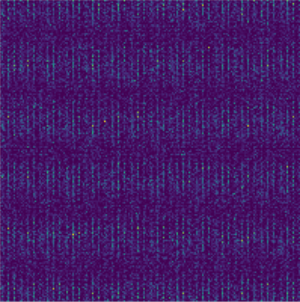
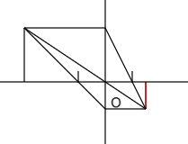

Mes travaux & projets
Réalisations personnelles et académiques en MP2I

Simulateur : particules et inférences en mécanique quantique
Implémentation en Python (pygame) d'un simulateur de physique quantique avec approximations.
En savoir plusAlgorithmes de retour sur trace & finance
Modélisation d'actions et de portefeuilles en C pour résoudre des problèmes ouverts en finance.
Voir le projet
Simulateur Optique : lentilles convergentes
Simulateur web de lentilles convergentes, modélisant le passage des rayons selon les paramètres.
Découvrir